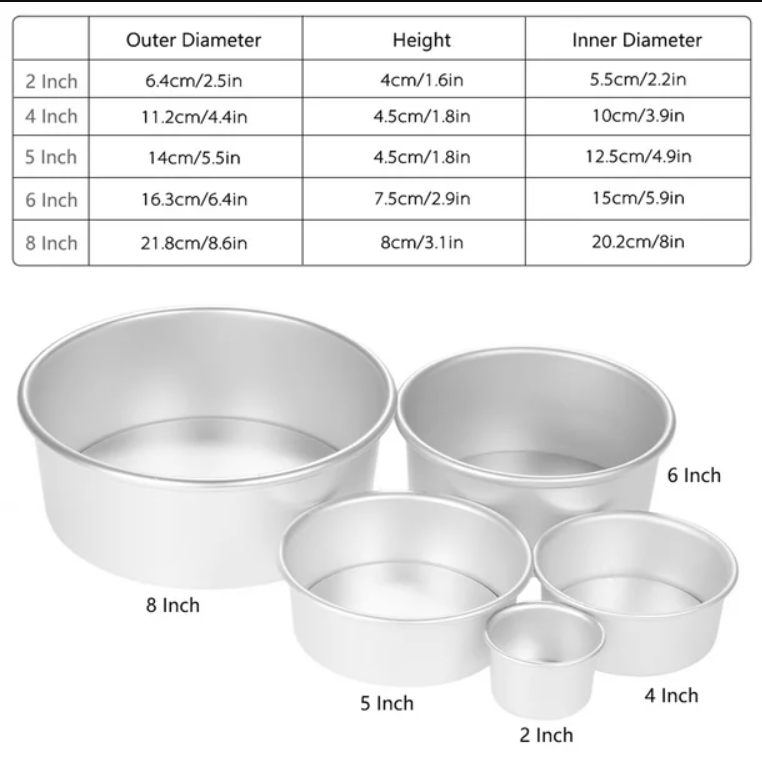
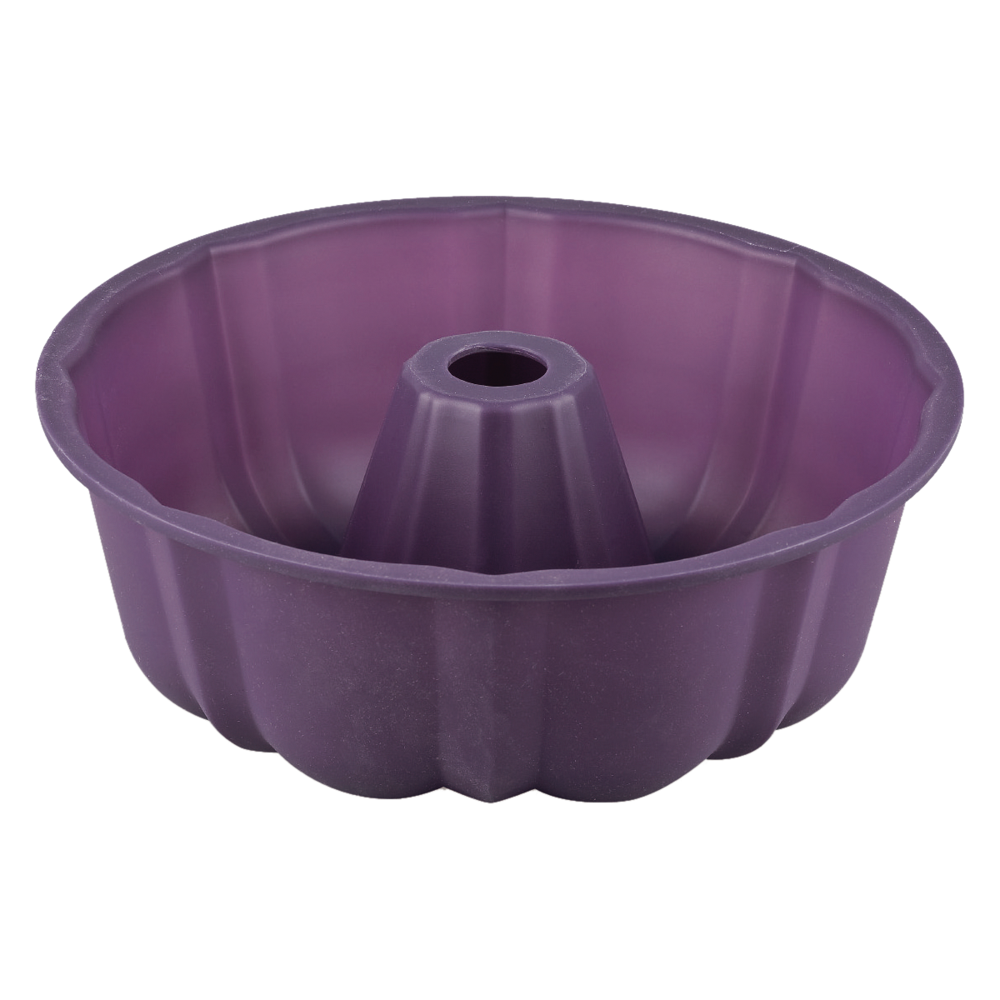

En Dulce Creación, te ofrecemos una amplia selección productos para hornear de la más alta calidad, para que puedas crear postres perfectos en cada ocasión.
Moldes para queques
Ofrecemos diversos estilos y una gran variedad de moldes
Moldes redondos
Los moldes redondos para hornear vienen en una amplia variedad de tamaños, desde pequeños moldes individuales para cupcakes hasta moldes grandes para pasteles familiares.
El tamaño del molde que elijas dependerá de la cantidad de personas que desees servir y del tipo de postre que vayas a preparar.

Guia de medidas para moldes
Moldes Silicon
Los moldes de silicona para hornear se han convertido en una herramienta indispensable para los amantes de la repostería, gracias a sus múltiples ventajas y a su facilidad de uso.
En Dulce Creación, te ofrecemos una amplia selección de moldes de silicona de la más alta calidad, para que puedas disfrutar de una experiencia de horneado superior y resultados impecables en cada receta..

Disponible en variedad de estilos
Escencias
Las esencias son concentrados de sabor y aroma que se utilizan en la repostería para agregar un toque especial a postres
En Dulce Creación, te ofrecemos una amplia variedad de esencias de la más alta calidad, para que puedas potenciar el sabor de tus creaciones y sorprender a tus paladares más exigentes.